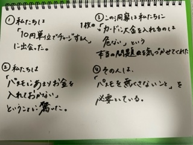

Design for Others
目立つパスケース
ビックリマーク型パスケース
この作品を作ろうとしたきっかけ
私は、10円単位で毎回チャージする人に出会った。
そこで私たちのグループでは、この人はどのような意図でこの行動をしたのか考えた。

このPOVから、PASUMOを落としても目立つパスケースを作れば問題を解決できるのではないか、と考えた。
実際に作った作品
折り紙で作ったプロトタイプ
レーザーカッターを使って作った作品
パスケースの形にレーザーカッターを使用してレザーをカットした。
その後カードを入れる部分を縫い合わせ、ビックリマークはグルーガンでくっ付けた。
落としても目立つように、見た人がハッとするようなデザインにしたいと考え、ビックリマークをつけた。
PASUMOのサイズを測ってから作成したが、縫う部分を内側にしすぎたためカードが入らなくなってしまった。
同じグループの人の作品